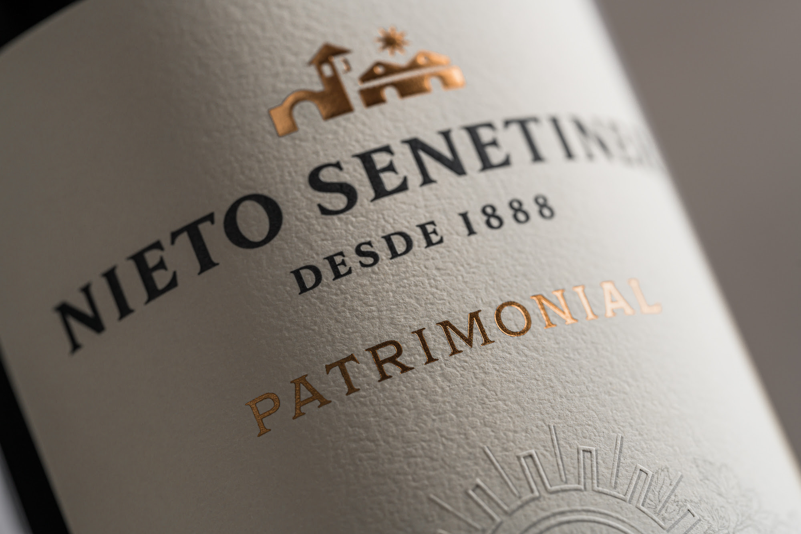
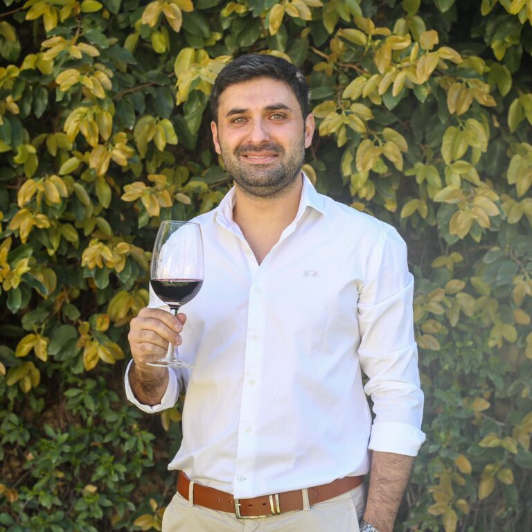

Entrevista a Juan Pablo Diaz, enólogo de Bodegas Lopez
Mendoza, Octubre 2021 El pasado mes entrevistamos a Juan Pablo Díaz, enólogo de Bodegas López. Nos compartió su historia personal y profesional en el mundo del vino. Aquí les dejamos la nota, con la esperanza de que la disfruten tanto como nosotros disfrutamos esta cálida charla.
Comenzamos preguntándole como comenzó su relación con el mundo del vino y nos conto que en un principio, cuando salió del secundario estaba un poco confundido sobre que carrera elegir, pero siempre le atrajo el mundo de las de bodegas y por eso se decidió finalmente comenzar en la universidad la carrera de enología. Nos contó que ya desde el primer año quiso empezar a trabajar en el mundo del vino, así que allá por el 2006 comenzó como pasante en Bodegas López (donde actualmente trabaja como enólogo). Relata que así se le hizo mucho más fácil la carrera ya que podía estudiar y trabajar de lo que le gustaba, toda la teoría que aprendía en la universidad podía verlo en la práctica en la bodega, cuenta fascinado.
Acerca de nuestra pregunta de cuanto dura la carrera, nos informó que la carrera de enólogo dura cinco años para poder completar la licenciatura, asi que durante todos esos años combinaba la carrera con su trabajo en la bodega López.
Le preguntamos como fue que lo nombraron enólogo en Bodegas López y nos dijo que todo fue sucediendo de a poco, que cuando ingreso eran muchos en el equipo y por cosas de la vida algunos se fueron de la bodega otros se mudaron y así, con dedicación y empeño fue avanzando, ganando confianza y realizando trabajos que demostraron su interés en crecer en la bodega.
Hoy en día ya hace ya casi 3 años que junto a Carlos López y Omar Panella encabezan la parte enológica tomando decisiones en conjunto. Cuando le comentamos que notamos por su relato que la familia López estaba muy involucrada en la bodega y sus decisiones nos respondió con un rotundo si! Nos dijo que, si bien los dejan trabajar muy tranquilo y abiertamente a la hora de tomar decisiones y probar los vinos, participan activamente y cada uno puede brindar su opinión, reflexiona al respecto y señala que seguramente ello es lo que ha llevado a crecer a la bodegas en estos 120 años, entre otras virtudes.
Acerca de lo que es trabajar en una bodega centenaria, nos conto que siempre le pasa que al hablar con colegas o amigos y contarles la historia de la bodega todos se asombran, ya que es una bodega que se sigue manteniendo dentro de la familia, algo muy inusual en Argentina. También afirmo que bajo todo esa historia, esa estructura tradicional se aplica la mejor tecnología para sacar al mercado nuevos productos y de la mejor calidad, por lo que se da esa combinación perfecta de clasico y moderno a la vez.
Nos conto que con el paso de los años mantienen todas las líneas clásicas, de las mas antiguas e importantes de argentina como Montchenot o Chateau Vieux remarcó que en Bodegas Lopez son una de las pocas bodegas Argentinas que pueden ofrecer al mercado vinos al estilo europeo. Ademas ofrecen lo que llaman cosechas especiales, cosechas unicas en el mercado con el añejamiento de vinos en grandes toneles donde se puede tomar un vino antiguo incluso del año en que naciste! con el relato de cómo fue esa cosecha, que tuvo de particular, como era la elaboracion en esa epoca, siendo algo unico que destaca mucho a la bodega.
Pero mirando al mercado también se encontraron que les venían pidiendo otras cosas, por lo que también hicieron otros vinos como varietales, frutales y vinos mas jóvenes. Hoy en Bodegas Lopez tienen 58 productos todos diferentes, por lo que tienen un amplio abanico para ofrecer a cualquier tipo de consumidor.
Siempre hay un vino para cada consumidor pero, está aquí la parte más difícil del enólogo, que es sacarse el chip propio de gustos personales y ponerse en el lugar del consumidor, por ejemplo, nos contaba que él no tiene preferencia por los vinos dulces, pero con el López Dulce Natural lograron que sea muy bien recibido, es dulce pero no empalagoso, fresco, equilibrado, y de baja graduación alcohólica y le encanto a una consumidora que ingresó a la Bodega afirmando que no le gustaba el vino y se fue fascinada con el Dulce Natural.
Señala así que, todos los vinos que fueron lanzando tuvieron gran aceptación en el publico y sin dudarlo dijo que, para él un vino es como un hijo, así que cuando lo elogian nada le pone más contento, al vino asi como a los hijos los ayudamos a crecer y es muy lindo verlo desarrollarse ya que cada cosecha es diferente.
Reflexiono acerca de la elaboración del vino, remarcando que no se fabrica sino que se elabora y, para lograrlo participa mucha gente que se involucra para que llegue esa botella al mercado, así todos los vinos tienen historias detrás, en este caso centenarias!
Les preguntamos que nuevos proyectos tienen en Bodegas López y nos dijo que siempre están trabajando en muchas ideas y proyectos, pero cada paso lo hacen con seguridad para ante todo privilegiar la calidad , a fin de que cuando finalmente sacan un producto al mercado el consumidor responda con aceptación.
Consultamos como fue la aceptación de las latas y nos dijo que fue muy buena, es un vino similar al dulce natural, envasado en lata el cual el envase no le hace perder calidad alguna, sino que al contrario puede tenerse en la heladera para tomar en un momento que se quiera un vino joven y fresco.
Nos contó que como nuevo lanzamiento, en Octubre se comenzó a celebrar una cena maridaje en el Restaurante de la Bodega, donde junto al chef y el equipo de cocina arman en forma conjunta maridajes correspondientes a cada menú. En estas cenas especiales, que se celebra un viernes al mes, el enólogo va a acompañar a los comensales en la cena y contara como se elaboró ese vino que degustan y porque lo eligieron para acompañar esa comida, una excelente propuesta sin dudas!
Agradecemos a Juan Pablo por la nota y predisposición y a Bodegas López por permitirnos esta charla.
